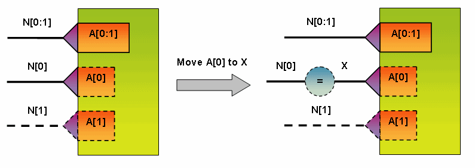
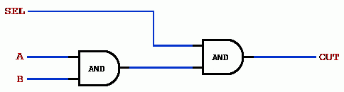
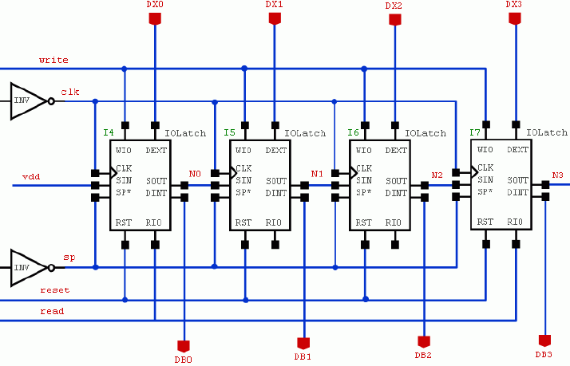
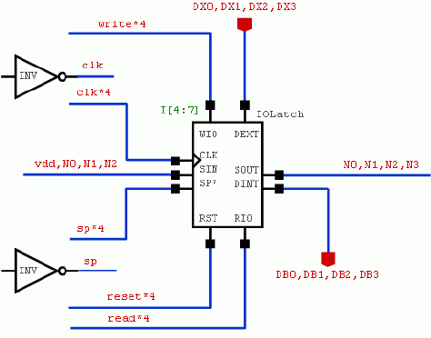
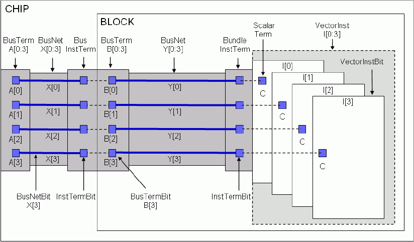

|
 |
 |
||||||
|
|
|
||||||
The logical connectivity in a design models the components and the electrical signals that move between those components. Logical connectivity is often associated with or derived from the geometric physical objects that represent the components, pins, and interconnects in a design. A design might contain
Logical connectivity is used to simulate and analyze a design. When associated with physical connectivity, the logical connectivity can be used to ensure that the geometric objects connect at the correct locations.
The logical connectivity in a design can be viewed from three domains:
The connectivity discussed in this document applies in each of the three domains. For information about the relationships of connectivity objects between the three domains, refer to OpenAccess Hierarchy Domains.
The primary objects that represent the logical connectivity in a design are as follows:
Conceptually, a net represents an electrical path in a circuit. A collection of wires or interconnects that carry the same electrical signal is considered to be in the same net. A net can be physically implemented using connection figure objects such as shapes (polygons, paths, lines, and so forth), routes, guides, and vias.
All nets have names, which are specified at creation time. Applications can retrieve the names and map them to strings using a specified nameSpace.
There four types of net objects:
Not every type of net is found in every type of design. Layout designs typically have only scalarNets and busNetBits. Schematic and netlist designs might have all four types of nets.
When a multi-bit net is created, single-bit nets, or bitNets, are implicitly created for each bit of the net if they don’t already exist. implicit bitNets are automatically deleted when the multi-bit net is deleted if the bitNets are not members of another net. The database maintains the implicit bitNets to support applications that can only perform scalarized traversal of the connectivity data.
The bits of one net can overlap with the bits of another net. For example, for nets “A[7:0]” and “A[1:0]”, the busNetBits “A[1]” and “A[0]” are members of both busNets. If net “A[7:0]” is deleted, the implicit busNetBits “A[7]”, “A[6]”, .., “A[2]” are also deleted, but the bits “A[1]” and “A[0]” remain because they are members of “A[1:0]”.
Two or more bitNets can be made equivalent to one another, and each set of equivalent nets has exactly one preferred equivalent. Equivalence can be logical equivalence, and not necessarily physical or electrical equivalence. Physical implementation objects, such as routes or shapes, might appear exclusively on the preferred equivalent net, or might be distributed among all of the equivalent nets. Although applications are encouraged to use the preferred equivalent net for all physical implementation and annotations, applications that analyze data from a variety of sources must be able to interpret databases in which the data has been distributed among all of the equivalent nets.
If your design has physical information or annotations on non-preferred equivalent nets, you can use the following functions, which support traversal of all nets, including equivalent nets.
OpenAccess implicitly creates and maintains net equivalences in response to editing operations involving overlapping multi-bit instTerms, overlapping multi-bit terminals, a single-bit instTerm that is also a member of a multi-bit instTerm, a single-bit terminal that is also a member of a multi-bit terminal, a multi-bit instTerm with repeated members or a multi-bit terminal with repeated members. These implicit equivalences are similar to the equivalences created explicitly by applications using the oaBitNet::makeEquivalent function. However, the applications cannot break an implicit equivalence directly.
Let's consider the following example:

In this example, both the multi-bit instTerm "A[0:1]" and the single-bit instTerm "A[0]" are explicit. The explicit single-bit instTerm "A[0]" is moved from net "N[0]" to net "X". However, the explicit multi-bit instTerm "A[0:1]" indicates that instTerm "A[0]" is connected to net "N[0]". To provide consistent connectivity, OA will automatically create an implicit equivalence between net "N[0]" and net "X". Once the single-bit instTerm "A[0]" is moved back to net "N[0]" the implicit equivalence is automatically removed.
The following functions merge terms or instTerms from an entire set of equivalent nets when the oacInstTermIterEquivNets flag is specified:
These functions return all equivalent nets by default:
These functions return a single net that is associated with a given object. By default, the functions returns the particular net that is connected to the term regardless of whether of not it is the preferred equivalent.
Note: Some functions, such as oaNet::getShapes(), operate only on the particular net you specify. (This function does not have the ability to merge shapes across equivalent nets.)
Terminals represent the interface to a design. Nets are made available from one design to a higher-level design through terminals. Pins associated with terminals represent the physical implementation of the interface to a design.
All terminals have names, which are specified at creation time. Applications can retrieve the names and map them to strings using a specified nameSpace.
Terminals are associated with a specified net when created. A terminal can be associated with one and only one net; however, a net might have many associated terminals. The number of bits in the net must match the number of bits implied by the specified terminal name. When a net is deleted, all its associated terminals are also deleted.
There four types of terminal objects:
When you create a multi-bit terminal, single-bit terminals, or bitTerms, are implicitly created for each bit of the terminal if they don’t already exist. These implicit bitTerms are automatically deleted when the multi-bit terminal is deleted if they are not members of another terminal. The database maintains the implicit bitTerms to support applications that can only perform scalarized traversal of the connectivity data.
The bits of one terminal can overlap with the bits of another terminal. For example, for terminals “A[7:0]” and “A[1:0]”, the busTermBits “A[1]” and “A[0]” are members of both busTerms. The database requires that the bits of the nets used to create the two terminals are the same for the common bitTerms. For example, if you create terms "A[1:0]" with net "a,b", you can only create term "A[7:0]" with a net like "z[7:2],a,b". The highest two bits of the term for "A[7:0]" must be the same as those in "A[1]" and "A[0]" or the database throws an error. Because the bitTerms A[1] and A[0] already exist, when creating A[7:0], the net specified must include the bitNets "a" and "b".
Explicitly created terminals are considered interface terminals, which means that they define the interface of the design that contains them.
You can assign a positional value to a terminal. An instTerms that is created to connect to a position binds to a terminal that has been assigned to that position.
Instances are references to other designs or modules from the context of the design in which they were placed. The design referenced by an instance is referred to as the master design; the module referenced by an instance is referred to as the master module. You can use instances to create hierarchical designs because the master of an instance can contain instances of other master designs or master modules.
All instances have names, which are specified at creation time. Applications can retrieve the names, then map them to strings using a specified nameSpace. Note that vectorInsts do not support non-singular step values in the range specification.
There is one instance object that appears only in the block and occurrence domains:
There are three instance objects that are typically used for representing logical connectivity:
In the block domain, the instance master must be another design. In the module and occurrence domains, the instance master can be either another design or a module in the context of the design containing the instance.
When a vectorInst is created, vectorInstBits are automatically created for each bit of the instance. Unlike nets and terminals, vectorInsts cannot overlap. In addition, explicit vectorInstBits cannot overlap with existing vectorInsts, and explicit vectorInsts cannot overlap with existing vectorInstBits. The database maintains the implicit vectorInstBits to support applications that can only perform scalarized traversal of the connectivity data.
Instance terminals, or instTerms, make connections between nets in one level of a design to terminals (and their nets) in a different level of the design in an instance master. A net specification (which can be NULL), instance, and terminal specification are required for creating an instTerm. There are two types of connections that instTerms support:
An instTerm connects by reference when the terminal specification is either a pointer to a specific terminal in an instance master or the name of a terminal in an instance master. The connection is valid if the number of bits in the net matches the connection width, which is the number of bits in the terminal (or terminal name) multiplied by the number of bits in the corresponding instance.
Creating an instTerm using the name of a terminal does not cause the instance master to be bound (read in). OpenAccess attempts to to bind the instance master only if the instTerm’s terminal is queried. An instTerm is considered bound when the instance master is bound and the referenced terminal exists in the master. A traversal from a net to an instTerm to its corresponding terminal does not succeed unless the instTerm is bound.
When creating a connect-by-reference instTerm in which the net is not NULL, the number of bits in the net must match the connection width. The connection is the number of bits implied by the terminal name or the terminal itself multiplied by the number of bits implied by the instance.
An instTerm connects by position when the terminal specification is a numeric value specifying the terminal position to be connected. Positional connections support the connection semantics of Verilog and other netlist formats.
Creating an instTerm with a terminal position does not cause the instance master to be bound. The database attempts to bind the instance master only if the instTerm’s terminal is queried. An instTerm is considered bound when the instance master is bound, a terminal exists at the specified position, and the connection width matches the number of bits associated with the instTerm.
All of the instTerms associated with a particular instance must be the same type. That is, all of the connections must either be by reference or by position.
When a multi-bit connection is made, implicit single-bit instTerms are created for each bit in the connection. The bits of a multi-bit instTerm can overlap the bits of other instTerms if the corresponding bitNets and bitTerms match. The database maintains the implicit instTerms to support those applications that can only perform scalar traversal of the connectivity data.
When the terminal associated with a multi-bit instTerm has repeated members, the bitNets in the net associated with the multi-bit instTerms should also be repeated. Otherwise, it is an error unless the bitNets across the repeated bit instTerms are equivalent. The same is true when two multi-bit instTerms overlap. The bits of the net associated with the two multi-bit instTerms should be the same across the overlapping bits. Otherwise, it is an error unless the bitNets are equivalent to each other.
If an explicit multi-bit instTerm, "A[0:1]" is connected to net "N[0:1]" and the bit instTerm "A[0]" is also explicit but not connected to any net, then there is no way to consistently represent the connectivity of "A[0]"; the multi-bit connectivity says that it is connected to "N[0]" but the bit-wise connectivity says that "A[0]" is disconnected. In this situation, the bit-wise connectivity wins and the explicit multi-bit instTerm "A[0:1]" will be automatically disconnected from the multi-bit net as soon as "A[0]" is disconnected. Later, the bit instTerm "A[0]" may be connected to something else, but OA will not automatically restore the multi-bit connectivity of "A[0:1]". In this case, "A[0]" may say that it is connected to "X" but "A[0:1]" will not be connected to anything. Semantically, a disconnected multi-bit instTerm does not imply anything about the connectivity of the member bits.
This example compares VHDL and Verilog code segments against a representative schematic.
Verilog Code |
VHDL Code |
|---|---|
if (SEL == 1) |
if (SEL = ‘1’) then |
After translation, a corresponding schematic of the data might look like the following. Note that all of the nets and instances are scalar.

This example compares data implemented using single-bit nets, terminals, and an instance to data implemented using multi-bit nets, terminals, and a vectorInst. The first schematic uses four instances of IOLatch named I4, I5, I6, and I7.

This schematic uses a single vectorInst I[4:7], bundleNets, and bundleTerms to implement the same connectivity.

There is a secondary set of objects that support and extend the basic capabilities of the primary connectivity objects.
A connection definition, or connectDef, associates an assignment definition with a bitNet or a bitTerm. The assignment definition specifies an assignment name and a default net name. The assignment name specifies the name of an assignment object to use when resolving the connectivity associated with the connection definition.
A connection definition is associated with a global net or a terminal representing a global net. With assignment definitions and objects, you can assign a different net to the connection from a higher level in a design or module hierarchy. This supports the following:
A connectDef associated with a bitNet is called a netConnectDef. The default net name in the assignment definition specifies the name to use if a corresponding assignment is not found.
A connectDef associated with a bitTerm is called a termConnectDef. The default net name in the assignment definition specifies the name to use for the net that externally connects to the terminal if a corresponding assignment is not found.
The occInstTerm, occNet, and occTerm objects support getAssignedNet() methods that determine the net assigned to the object based on the associated connection definition and corresponding assignments found in the occurrence hierarchy.
A connection assignment specifies the assignment object for a corresponding net or terminal with a connection definition. In conjunction with connection definitions, assignment objects specify how nets are connected by name in a design hierarchy. Assignments are associated with an instance that represents the portion of the design hierarchy to which the connection assignment applies. There are two types of assignment objects:
For more detailed information about how connection definitions and assignments work in the occurrence hierarchy, see Defined Connections.
An instance header, or instHeader, is an object that contains information common to all instances of a particular master. In the block domain, instHeaders are references to master designs outside of the context of the design containing the instance. In the module and block domains, instHeaders can be references to master designs or references to master modules that have been defined in the context of the owning design.
An instHeader is implicitly created whenever the first instance referencing a particular master is created. The instHeader is destroyed when the last instance associated with it is destroyed.
All busNets and busNetBits with the same base name are managed by a bus definition object called a busNetDef. The busNetDef manages:
Some applications might explicitly create busNetDefs before creating any busNets or busNetBits with the same baseName. Otherwise, a busNetDef is implicitly created whenever an application creates a busNet or busNetBit. Implicitly created busNetDefs are automatically deleted when the busNet or busNetBit associated with it is deleted.
All busTerms and busTermBits with the same base name are managed by a bus definition object called a busTermDef. The busTermDef manages:
Some applications might explicitly create busTermDefs before creating any busTerms or busTermBits with the same baseName. Otherwise, a busTermDef is implicitly created whenever an application creates a busTerm or busTermBit. Implicitly created busTermDefs are automatically deleted when the associated busTerm or busTermBit is deleted.
All vectorInsts and vectorInstBits with the same base name are managed by a bus definition object called a vectorInstDef. The vectorInstDef manages:
Some applications might explicitly create vectorInstDefs before creating any vectorInsts or vectorInstBits with the same baseName. Otherwise, a vectorInstDef is implicitly created whenever an application creates a vectorInst or vectorInstBit. Implicitly created vectorInstDefs are automatically deleted when the associated vectorInst or vectorInstBit is deleted.
The busNetDef, busTermDef, and vectorInstDef vector definition objects support a bitOrder attribute. The bitOrder specifies how the vector definition should be interpreted by applications interested in this information. For example, A[9:1] and A[0:7] are both legal bus names. The bitOrder on busNetDefs provides information about whether the vector definition should be interpreted as A[9:0] or A[0:9].
The bitOrder of a vector definition object is independent of the order within individual vector objects with the same name.So, the bitOrder of an explicit busNetDef is independent of the order within individual busNets with the same base name. Verilog requires a single wire declaration for a given base name, and the range of that declaration covers all of the bit indices used by the sub-ranges that correspond to busNets.
Applications that need to define a specific bitOrder on a vector definition object need to create the vector definition object explicitly before creating any of the corresponding vectored objects. Vectored objects with the same base name are then added to the vector definition.
A scalarized view of the logical connectivity in a design is always available. The database implicitly creates the bit objects as required. Applications can traverse nets, instTerms, instances, and terminals in a scalar fashion regardless of how the data was created.
Implicitly created connectivity can be traversed and queried, but it cannot be modified -- only explicit connectivity can be modified.

In order to modify implicit connectivity, the connectivity must first be made explicit. This can be accomplished in two ways:
In the Bitwise Connectivity example, when the bundleNet clk*4 is created, an implicit scalarNet, clk, is also created. A call to create an explicit scalarNet, clk, results in upgrading the implicit clk so that it is explicit and can be modified independently from the bundleNet of which it is a member.
You can also upgrade implicit bit connectivity so that it is editable by scalarizing its multi-bit owner. Scalarizing the bundleNet vdd,N0,N1,N2 makes its implicit bitNets vdd, N0, N1, and N2 explicit and editable. In addition, the originating bundleNet is downgraded and made implicit so that it can no longer be modified. The individual bitNets can be manipulated as if they were explicitly created. The bundleNet remains to store information about how the connectivity was originally created. Deleting any one of the nets vdd, N0, N1, or N2 results in the implicit bundleNet also being deleted because the original definition of the bit connectivity is no longer valid.
The ability to scalarize an object is available on all of the primary connectivity objects. Scalarizing a net or a terminal follows the approach described previously; the implicit bit members of a multi-bit net or terminal are made explicit and the multi-bit net is made implicit. Scalarizing a bitNet or bitTerm insures that the object itself is explicit and available for modification and use.
Scalarizing a multi-bit instTerm makes the associated single-bit instTerms explicit and editable and makes the multi-bit instTerm implicit. In addition, the net associated with the multi-bit instTerm is also scalarized, insuring that the bitNets associated with the single-bit instTerms are also explicit. Scalarizing a single-bit instTerm insures that it is explicit and editable and scalarizes its associated net.
Scalarizing a vectorInst makes its associated vectorInstBits explicit and editable and makes the vectorInst implicit. In addition, each instTerm associated with the instance is scalarized, insuring that any implicit instTerms associated with one of the vectorInstBits are made explicit. As mentioned previously, this propagates to scalarizing the nets that are connected to instance.
The ability to scalarize objects allows applications to perform localized scalarization so that they can modify a portion of a design. As a convenience, there is a scalarize() method on oaDesign that scalarizes all the connectivity in the associated design.
Return to Programmers Guide topics

Copyright © 2001-2010 Cadence Design Systems, Inc.
All rights reserved.